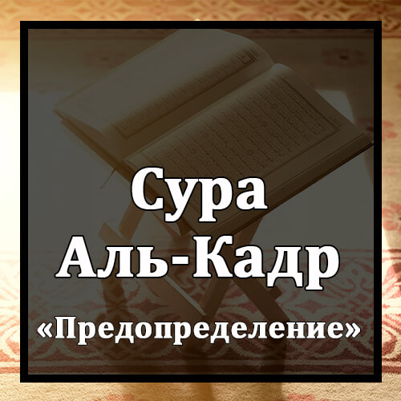

Бисмилляхир-Рахманир-Рахиим
Во имя Аллаха Милостивого и Милосердного!
Инна Анзальнаху Фи Ляйлятиль-Кадр.
Воистину, Мы ниспослали его (Коран) в ночь предопределения (или величия).
Уа Ма Адрака Ма Ляйлятуль-Кадр.
Откуда ты мог знать, что такое ночь предопределения (или величия)?
Ляйлятуль-Кадри Хайрун Мин Альфи Шахр.
Ночь предопределения (или величия) лучше тысячи месяцев.
Таназзалюль-Маля`икату Уар-Руху Фиха Би`изни Раббихим Мин Кулли Амр.
В эту ночь ангелы и Дух (Джибриль) нисходят с дозволения их Господа по всем Его повелениям.
Салямун Хийа Хатта Матля`иль-Фаджр.
Она благополучна вплоть до наступления зари.